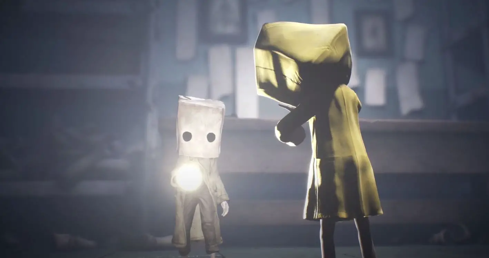
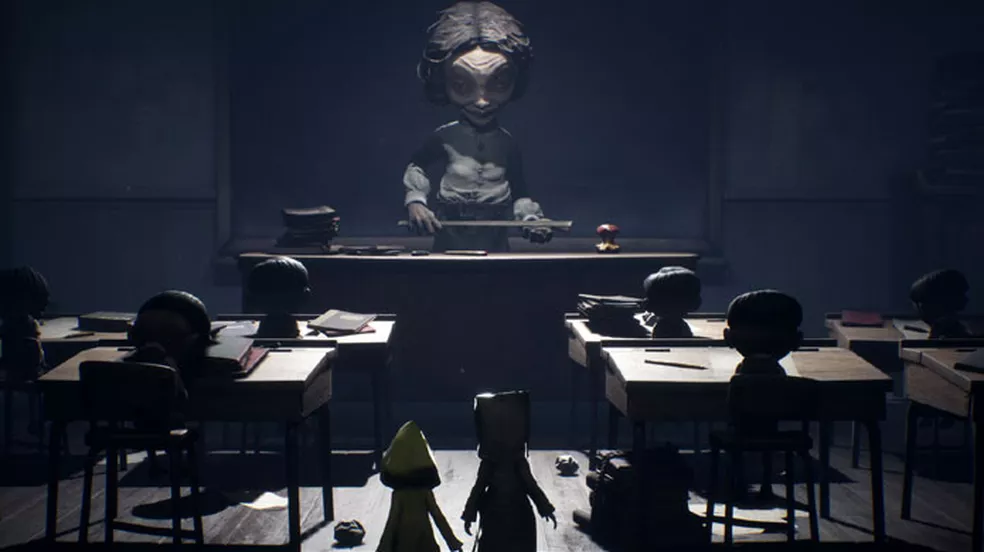
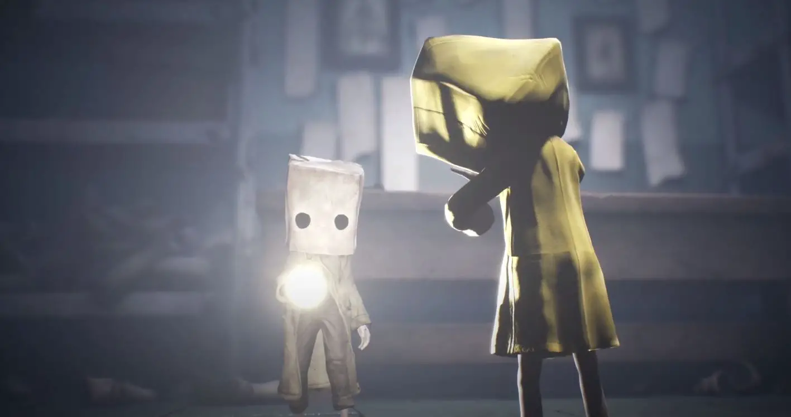
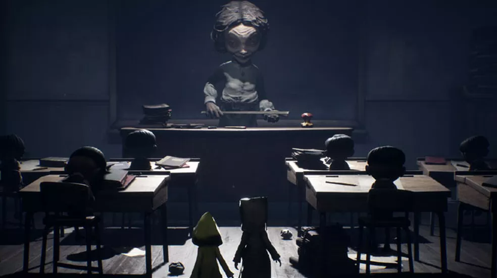
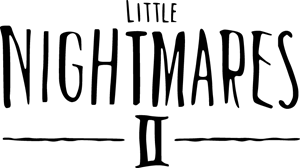

Junto de Six, a heroína do Little Nightmares original, apenas você pode impedir que ela desapareça. Enquanto a relação Mono e Six cresce, a dupla deve trabalhar junta utilizando uma combinação de furtividade e itens para superar enigmas complexos e inimigos horripilantes. Reúna coragem e comece sua jornada para enfrentar as ameaças terríveis em uma missão para impedir a fonte do mal que se espalha sobre a terra.